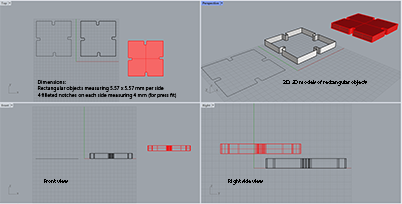

Courtenay's Assignment 2!

My goals for this project were to create a parametric model using a grasshopper definition, then using the model, design parts to be baked in Rhino and laser cut on cardboard that could be clipped together. The grasshopper definition needed to allow for varying thickness of cardboard.
Being unfamiliar with Grasshopper and still very new to Rhino, I watched a tutorial given by our terrific teaching assistant, Junchao, on how to model parametric objects. Following along in the tutorial, and with a bit a luck and perseverance, I was finally able to define this base pologon shape, then extrude it properly and bake it in Rhino before laser printing!


Here are some shots of the early stage of my Grasshopper definition work-in-progress.
Grasshopper file (in progress!)
Rhino 7 file
Being unfamiliar with computer-assisted design, I watched a tutorial given by our fantastic teaching assistant, Junchao, on how to model objects using Rhino software. Then I prototyped a new rectangular shape in digital form. In my first Rhino model, the shape's notches measured 4 mm in width and 6.36 mm in depth.

I went to the makerspace to laser print my design and do some testing. Before printing, I had to convert my Rhino file (.3dm) to Adobe Illustrator (.ai), reduce the stroke weight to .01 pt, and change the color to RGB (255, 0, 0) so that the laser printer would recognize it.
When testing the fit of my first pair of laser printed shapes, I found the press fit to be too loose. I made several other minor adjustments to the width of my notches, laser cut, and re-tested them, looking for a better fit.

Then the makerspace lab tech made a very constuctive suggestion - for a more secure fit, increase the depth of the notches in addition to the width. Back in Rhino, I finally reduced the width of my notches to 3.5 mm and increased their depth to 14 mm. I reexported the Rhino model to an Illustrator file, reset the stroke and RGB color settings, then re-ran the print job on the final version of my base polygon shape. Success at last! A snug fit!
Rhino 7 file (final version
Adobe Illustrator file (final version)
As a last step I assembled my 30 parts into this final asymmetrical form et voila!
Big thanks to the makerspace lab tech, Jimmy, who helped me successfullly problem solve!